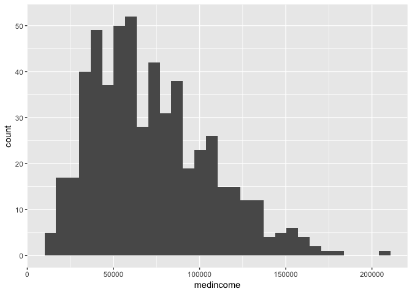
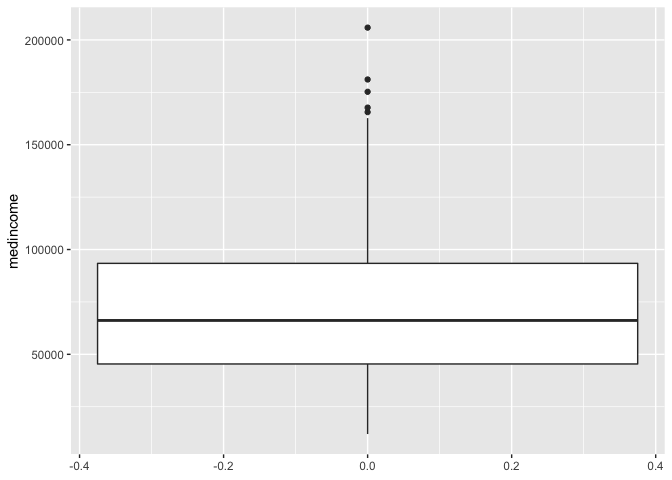
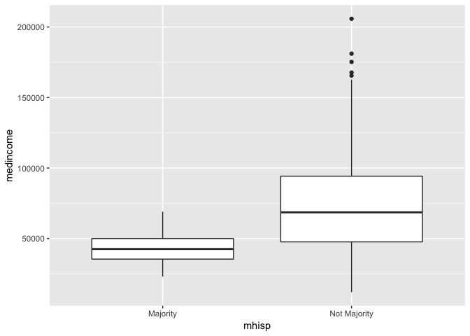

Lab 1: Working with Data in R
CRD 298 - Spatial Methods in Community Research
Professor Noli Brazil
January 9, 2019
In this guide you will learn how to download, clean, manage and summarize non-spatial data using R. You will also learn how to work with data from the United States Census, the leading source for timely and relevant information about communities. The objectives of the guide are as follows
- Download Census data using their API
- Read data into R
- Learn data wrangling functions
- Summarize data using descriptive statistics and graphs
This lab guide follows closely and supplements the material presented in Chapters 1, 3, 5, 8-10, 14 and 22 in the textbook R for Data Science (RDS).
R Script or R Markdown
When going through lab guides, I would recommend not copying and pasting code directly into the R Console, but saving and running it from either an R Script or R Markdown file. We covered R Scripts in Lab 0 and R Markdown files in the Assignment Guidelines.
If you decide to use an R Markdown file, click on File at the top menu in RStudio, select New File, and then R Markdown. A window should pop up. In that window, for Title, put in “Lab 1”. For Author, put your name. Leave the HTML radio button clicked, and select OK. A new R Markdown file should pop up in the top left window. Don’t change anything inside the YAML (the stuff at the top in between the ---). Also keep the grey chunk after the YAML.
```{r setup, include=FALSE}
knitr::opts_chunk$set(echo = TRUE)
```Delete everything else. Save this file (File -> Save) in an appropriate folder. If you are using your laptop for this guide, it’s best to set up a clean and efficient file management structure like we described in lecture and outlined here. For example, below is where I would save this file in my Mac laptop (I named the file “Lab1”). Save all other files used in this lab in this same folder. Now your R Markdown file is ready for Lab!

This is what file organization looks like
Downloading Census Data
The primary source of data that we’ll be using in this class is the United States Census. There are two ways to bring Census data into R.
Using the Census API
The first way is to bring it directly into R using the Census Application Program Interface (API). An API allows for direct requests for data in machine-readable form. That is, rather than you having to navigate to some website, scroll around to find a dataset, download that dataset once you find it, save that data onto your hard drive, and then bring the data into R, you just tell R to retrieve data directly from that website using one or two lines of code. In order to download from the Census API, you will need to load in the tidyverse package, which we covered in Lab 0. You will also need to install and load in the tidycensus package using the install.packages() and library() functions.
install.packages("tidycensus")
library(tidyverse)
library(tidycensus)In order to directly download data from the Census API, you need a key. You can sign up for a free key here, which you should have already done before the lab. Type your key in quotes using the census_api_key() command
census_api_key("YOUR API KEY GOES HERE")The function for downloading American Community Survey (ACS) Census data is get_acs(). The command for downloading decennial Census data is get_decennial(). Getting variables using the Census API requires knowing the variable ID - and there are thousands of variables (and thus thousands of IDs) across the different Census files. To rapidly search for variables, use the commands load_variables() and View(). Because we’ll be using the ACS in this guide, let’s check the variables in the most recent 5-year ACS (2012-2016)
v16 <- load_variables(2016, "acs5", cache = TRUE)
View(v16)A window in the top left of your RStudio interface should have popped up showing you a record layout of the 2012-16 ACS. To search for specific data, select “Filter”" located at the top left of this window and use the search boxes that pop up. For example, type in “Hispanic” in the box under “Label”. You should see at the top of the list the first set of variables we’ll want to download - race/ethnicity. Let’s extract that data and total population for California census tracts using the get_acs() command
ca <- get_acs(geography = "tract",
year = 2016,
variables = c(tpopr = "B03002_001",
nhwhite = "B03002_003", nhblk = "B03002_004",
nhasn = "B03002_006", hisp = "B03002_012"),
state = "CA",
survey = "acs5")In the above code, we specified the following arguments
geography: The level of geography we want that data in - in our case, tract (we’ll go through the meaning and importance of tracts in community research in Week 2. If you can’t wait, check out the Census definition here.). Other geographic options can be found here.year: The end year of the data (because we want 2012-2016, we use 2016).variables: The variables we want to bring in as specified in a vector you create using the functionc(). Note that we created variable names of our own (e.g. “nhwhite”) and we put the ACS IDs in quotes. (“B03002_003”). Had we not done this, the variable names will come in as they are named in the ACS, which is not all that descriptive.state: We can filter the tracts to those in a specific state, here it is “CA” - if we don’t specify this, we get all tracts in the United States. There is also acountyfilter.survey: The specific Census survey were extracting data from. We want 5-year American Community Survey, so we specify “acs5” - the ACS comes in 1-, 3-, and 5-year varieties (more on this in Week 2 lecture).
Type in ? get_acs() to see the full list of options. If you type in ca in your console, you should see a tibble pop up with the variables we selected. Cool, right?
ca## # A tibble: 40,285 x 5
## GEOID NAME variable estimate moe
## <chr> <chr> <chr> <dbl> <dbl>
## 1 060014001… Census Tract 4001, Alameda County, … tpopr 3018 195
## 2 060014001… Census Tract 4001, Alameda County, … nhwhite 2145 192
## 3 060014001… Census Tract 4001, Alameda County, … nhblk 92 54
## 4 060014001… Census Tract 4001, Alameda County, … nhasn 491 144
## 5 060014001… Census Tract 4001, Alameda County, … hisp 83 57
## 6 060014002… Census Tract 4002, Alameda County, … tpopr 1960 94
## 7 060014002… Census Tract 4002, Alameda County, … nhwhite 1426 131
## 8 060014002… Census Tract 4002, Alameda County, … nhblk 11 12
## 9 060014002… Census Tract 4002, Alameda County, … nhasn 165 54
## 10 060014002… Census Tract 4002, Alameda County, … hisp 211 67
## # ... with 40,275 more rowsDownloading from an online source
The other way to get Census data is to download them directly from the web. There are several websites where you can download Census data including Social Explorer, which as UC Davis affiliates we have free access to, and Fact Finder, which is free for everyone. The best online source for downloading machine-readable census data is the National Historical Geographic Information System (NHGIS). You may choose to use NHGIS (or any of the other sources listed above) over the API because it is more user friendly in terms of selecting variables. I’ve uploaded a brief step-by-step tutorial for downloading NHGIS data here.
To save us time, I’ve uploaded an NHGIS csv file on GitHub for you to use in this lab. Download the file from here and save it into the same folder where your Lab 1 R Markdown or R Script file resides. The file contains census tract-level data on median household income for all tracts in the United States. The record layout/codebook for the file can be found here.
Reading in data
Getting data directly into R through an API is super cool and convenient, but you’ll have to download and read in most data without an API. Most data files you will encounter are comma-delimited (or comma-separated) files, which have .csv extensions. Comma-delimted means that columns are separated by commas. The file from NHGIS is a .csv file. To import this file in R, use the read_csv() command, which is found in the tidyverse package.
To read in the csv file you downloaded from NHGIS, first make sure that R is pointed to the folder you saved your data into. Type in getwd() to find out the current directory and setwd("directory name") to set the directory to the folder containing the data. For me, the NHGIS file is located in the folder shown in Figure 1.
Figure 1: Direct R to where your data reside.
I type in the following command to set the directory to the folder containing my data on my Mac laptop
setwd("/Users/noli/Documents/Classes/CRD 298/Lab/Lab 1")Note that on a Windows system, the file pathway may be indicated with a back slash \. R doesnt like that because it thinks of a single backslash as an escape character. Use instead two back slahses \\ or a forward slash /. Use read_csv() and plug in the name of the file in quotes inside parentheses
nhgisfile1 <- read_csv("nhgis0106_ds225_20165_2016_tract.csv")Data Wrangling
It is rare that the data set you download is in exactly the right form for data analysis. For example, you might want to analyze just Yolo county neighborhoods. Or you might want to discard certain variables from the dataset to reduce clutter. Or you encounter missing data. The process of gathering data in its raw form and molding it into a form that is suitable for its end use is known as data wrangling.
In this lab, we won’t have time to go through all of the methods and functions in R that are associated with the data wrangling process. We will cover more in later labs and many methods you will have to learn on your own given the specific tasks you will need to accomplish. In the rest of this guide, we’ll go through some of the basic data wrangling techniques using the functions found in the package dplyr, which was automatically installed and loaded when you brought in the tidyverse package. These functions can be used for tibbles and regular data frames.
Selecting and renaming variables
In practice, most of the data files you will download will contain variables you don’t need. It is easier to work with a smaller dataset as it reduces clutter and clears up memory space, which is important if you are executing complex tasks on a large number of observations. Use the command select() to keep variables by name. Visually, we are doing the following (taken from the RStudio cheatsheet)

To see the names of variables in your dataset, use the names() command.
names(ca)## [1] "GEOID" "NAME" "variable" "estimate" "moe"Let’s keep GEOID, NAME, variable, and estimate from the ca dataset.
select(ca, GEOID, NAME, variable, estimate)## # A tibble: 40,285 x 4
## GEOID NAME variable estimate
## <chr> <chr> <chr> <dbl>
## 1 06001400100 Census Tract 4001, Alameda County, Calif… tpopr 3018
## 2 06001400100 Census Tract 4001, Alameda County, Calif… nhwhite 2145
## 3 06001400100 Census Tract 4001, Alameda County, Calif… nhblk 92
## 4 06001400100 Census Tract 4001, Alameda County, Calif… nhasn 491
## 5 06001400100 Census Tract 4001, Alameda County, Calif… hisp 83
## 6 06001400200 Census Tract 4002, Alameda County, Calif… tpopr 1960
## 7 06001400200 Census Tract 4002, Alameda County, Calif… nhwhite 1426
## 8 06001400200 Census Tract 4002, Alameda County, Calif… nhblk 11
## 9 06001400200 Census Tract 4002, Alameda County, Calif… nhasn 165
## 10 06001400200 Census Tract 4002, Alameda County, Calif… hisp 211
## # ... with 40,275 more rowsA shortcut way of doing this is to use the : operator.
select(ca, GEOID:estimate)## # A tibble: 40,285 x 4
## GEOID NAME variable estimate
## <chr> <chr> <chr> <dbl>
## 1 06001400100 Census Tract 4001, Alameda County, Calif… tpopr 3018
## 2 06001400100 Census Tract 4001, Alameda County, Calif… nhwhite 2145
## 3 06001400100 Census Tract 4001, Alameda County, Calif… nhblk 92
## 4 06001400100 Census Tract 4001, Alameda County, Calif… nhasn 491
## 5 06001400100 Census Tract 4001, Alameda County, Calif… hisp 83
## 6 06001400200 Census Tract 4002, Alameda County, Calif… tpopr 1960
## 7 06001400200 Census Tract 4002, Alameda County, Calif… nhwhite 1426
## 8 06001400200 Census Tract 4002, Alameda County, Calif… nhblk 11
## 9 06001400200 Census Tract 4002, Alameda County, Calif… nhasn 165
## 10 06001400200 Census Tract 4002, Alameda County, Calif… hisp 211
## # ... with 40,275 more rowsThe : operator tells R to select all the variables from GEOID to estimate. This operator is useful when you’ve got a lot of variables to keep and they all happen to be ordered sequentially.
You can use also use select() command to keep variables except for the ones you designate. For example, to keep all variables in ca except moe and save this into a new tibble called ca1, type in
ca1 <- select(ca, -(moe))The negative sign tells R to exclude the variable named within the parentheses.
You will likely encounter a variable with a name that is not so descriptive. Use the command rename() to, what else, rename a variable! Let’s rename AF49E001 to medincome in the nhgisfile1 dataset. Make this permanent by assigning it back to nhgisfile1 using the arrow operator <-
nhgisfile1 <- rename(nhgisfile1, medincome = AF49E001)
names(nhgisfile1)## [1] "GISJOIN" "YEAR" "REGIONA" "DIVISIONA" "STATE"
## [6] "STATEA" "COUNTY" "COUNTYA" "COUSUBA" "PLACEA"
## [11] "TRACTA" "BLKGRPA" "CONCITA" "AIANHHA" "RES_ONLYA"
## [16] "TRUSTA" "AITSCEA" "ANRCA" "CBSAA" "CSAA"
## [21] "METDIVA" "NECTAA" "CNECTAA" "NECTADIVA" "UAA"
## [26] "CDCURRA" "SLDUA" "SLDLA" "ZCTA5A" "SUBMCDA"
## [31] "SDELMA" "SDSECA" "SDUNIA" "PUMA5A" "BTTRA"
## [36] "BTBGA" "NAME_E" "medincome" "NAME_M" "AF49M001"Note that you can rename multiple variables within the same rename() command.
Tidy up
Tidying up a dataset means following the rules outlined on page 149 of RDS: (1) Each variable must have its own column, (2) each observation must have its own row, and (3) each value must have its own cell. The dataset nhgisfile1 looks “tidy”, but the dataset ca1 is not. Why?
We’ll need to “spread” the dataset. This will convert the dataset from long to wide. Use the function spread() and save the tidy dataset back into ca1.
ca1 <- spread(ca1, key = variable, value = estimate)
ca1## # A tibble: 8,057 x 7
## GEOID NAME hisp nhasn nhblk nhwhite tpopr
## <chr> <chr> <dbl> <dbl> <dbl> <dbl> <dbl>
## 1 06001400… Census Tract 4001, Alameda C… 83 491 92 2145 3018
## 2 06001400… Census Tract 4002, Alameda C… 211 165 11 1426 1960
## 3 06001400… Census Tract 4003, Alameda C… 386 599 606 3346 5236
## 4 06001400… Census Tract 4004, Alameda C… 266 458 410 2758 4171
## 5 06001400… Census Tract 4005, Alameda C… 486 140 944 1972 3748
## 6 06001400… Census Tract 4006, Alameda C… 158 116 584 636 1661
## 7 06001400… Census Tract 4007, Alameda C… 752 119 1691 1700 4552
## 8 06001400… Census Tract 4008, Alameda C… 421 436 1093 1390 3506
## 9 06001400… Census Tract 4009, Alameda C… 264 188 734 899 2262
## 10 06001401… Census Tract 4010, Alameda C… 1380 194 2057 1914 6193
## # ... with 8,047 more rowsCompare ca1 and ca. ca is a tract by variable level dataset whereas ca is a tract level dataset. Check the dimensions
dim(ca)## [1] 40285 5dim(ca1)## [1] 8057 7Creating new variables
The mutate() function allows you to create new variables within your dataset. This is important when you need to transform variables in some way - for example, calculating a ratio or adding two variables together. Visually, you are doing this

You can use the mutate() command to generate as many new variables as you would like. For example, let’s construct four new variables in ca1 - the percent of residents who are non-Hispanic white, non-Hispanic Asian, non-Hispanic black, and Hispanic. Name these variables pnhwhite, pnhasn, pnhblk, and phisp, respectively.
mutate(ca1, pnhwhite = nhwhite/tpopr, pnhasn = nhasn/tpopr,
pnhblk = nhblk/tpopr, phisp = hisp/tpopr)Note that you can create new variables based on the variables you just created in the same line of code. For example, you can create a categorical variable yielding “Majority” if the tract is majority Hispanic and “Not Majority” otherwise after creating the percent Hispanic variable within the same mutate() command. Let’s save these changes back into ca1.
ca1 <- mutate(ca1, pnhwhite = nhwhite/tpopr, pnhasn = nhasn/tpopr,
pnhblk = nhblk/tpopr, phisp = hisp/tpopr,
mhisp = ifelse(phisp > 0.5, "Majority","Not Majority"))
ca1We used the function ifelse() to create mhisp - the function tells R that if the condition phisp > 0.5 is met, the tract’s value for the variable mhisp will be “Majority”, otherwise it will be “Not Majority”.
Merging files
We need to join the two datasets nhgisfile1 and ca1 together. To do this, we need a unique ID that connects the tracts across the two files. The unique Census ID for a tract combines the tract, county and state IDs. We have this ID as the single variable GEOID in ca1, but separated as STATEA, COUNTYA and TRACTA in nhgisfile1. See Figure 2.
Figure 2: Geographic IDs
We can merge the two files by either merging on a single variable or on the three separate variables. We just need to make sure it is consistent across the two datasets. Let’s combine STATEA, COUNTYA and TRACTA into a single variable so it will match GEOID. To do this, use the command str_c() in the mutate() command. This function concatenates (joins together) two or more character variables.
nhgisfile1 <- mutate(nhgisfile1, GEOID = str_c(STATEA, COUNTYA, TRACTA))The function str_c() concatenates. There is also a function that separates, which is unsuprisingly named separate(). The function separates a character variable based on delimiters. The variable NAME in ca1 combines census tract name, county, and state.
Census Tract 4001, Alameda County, CaliforniaThe separate() function tells R to separate NAME into three variables with the names tract, county, and state.
ca1 <- separate(ca1, col = NAME, into = c("Tract", "County", "State"), sep = ", ")In the separate() function, you specify the variable or column you want to separate (col = NAME), the names of the three new variables containing the separate data pieces (into = c("Tract", "County", "State")), and the delimiter, which is a comma with a space (sep = ", ").
To merge the two datasets together, we’ll use the function left_join(), which matches pairs of observations whenever their keys are equal. We match on the variable GEOID and save the merged data set into a new object called cacounty.
catracts <- left_join(ca1, nhgisfile1, by = "GEOID")Remember that nhgisfile1 contains data on all U.S. tracts.
dim(nhgisfile1)## [1] 74001 41The resulting join merges the variables from nhgisfile1 into ca1. As such, catracts should only contain California tracts. You can check by examining the dimensions of ca1 and catracts - the number of rows should be equal.
dim(catracts)## [1] 8057 54dim(ca1)## [1] 8057 14There are other types of joins, which you can read more about in Chapter 10 of RDS.
Let’s keep a dataset containing race/ethnicity, median household income and some essential ID variables.
catracts <- select(catracts, GEOID, County, COUNTYA, pnhwhite:mhisp, medincome)Pipes
One of the important innovations from the tidy verse is the pipe operator %>%. You use the pipe operator when you want to combine mutiple operations into one line of code. For example, in cleaning the data set ca, we had two lines of code that (1) eliminate the variable moe and (2) made the data set tidy friendly. A pipe allows us to do this in one line of code
ca2 <- ca %>%
select(-(moe)) %>%
spread(key = variable, value = estimate) Let’s break down what the pipe is doing here. First, you start out with your dataset ca. You “pipe” that into the command select(). Notice that you didn’t have to type in ca inside that command - %>% pipes that in for you. select() deletes moe and then pipes this result into the command spread(), which converts the data from long to wide. Finally, the code saves the result into ca2 which we designated at the beginning with the arrow operator.
The pipe operator is very useful for complex operations, which you will encounter in the coming weeks. From now on, we’ll be using the pipe operator to make our code more efficient.
Subsetting/Filtering
Subsetting or filtering means selecting rows/obsevervations based on their values. To subset in R, use the command filter(). Visually, subsetting rows looks like.

The first argument in the parentheses of this command is the name of the data frame. The second and any subsequent arguments (separated by commas) are the expressions that filter the data frame. For example, we can select Sacramento county using its FIPS code
filter(catracts, COUNTYA == "067")The double equal operator == means equal to. We can also explicitly exclude cases and keep everything else by using the not equal operator !=. The following code excludes Sacramento county.
filter(catracts, COUNTYA != "067")What about filtering if a county has a value greater than a specified value? For example, counties with a percent white greater than 0.5 (50%).
filter(catracts, pnhwhite > 0.50)What about less than 0.5 (50%)?
filter(catracts, pnhwhite < 0.50)Both lines of code do not include counties that have a percent white equal to 0.5. We include it by using the less than or equal operator <= or greater than or equal operator >=.
filter(catracts, pnhwhite <= 0.5)In addition to comparison operators, subsetting may also utilize logical operators that make multiple selections. There are three basic logical operators: & (and), | is (or), and ! is (not). We can keep counties with pnhwhite greater than 0.5 and medincome greater than $80,000 using &.
filter(catracts, pnhwhite > 0.5 & medincome > 80000)Use | to keep counties with a COUNTYA of “06067” (Sacramento) or “06113” (Yolo) or “06075” (San Francisco)
sub.tracts <- filter(catracts, COUNTYA == "067" | COUNTYA == "113" | COUNTYA == "075")Saving data
If you want to save your data frame or tibble as a csv file on your hard drive, use the command write_csv().
write_csv(sub.tracts, "lab1_file.csv")The first argument is the name of the R object you want to save. The second argument is the name of the csv file in quotes. Make sure to add the .csv extension. The file is saved in the folder you set as the current working directory.
Summarizing variables
We now move from functions that help bring in and clean your data set to those that help summarize its variables. We use the function summarize() to get descriptive statistics of our data. For example, let’s calculate mean neighborhood income in San Franciso, Yolo, and Sacramento counties. The first argument inside summarize() is the data object ncal.tracts and the second argument is the function calculating the specific summary statistic, in this case mean().
summarize(sub.tracts, mean(medincome))## # A tibble: 1 x 1
## `mean(medincome)`
## <dbl>
## 1 NAWe got an NA. This means we have missing median household income for at least one of our tracts. I’ve posted a mini lab for dealing with missing data. The methods I suggest in that lab are basic - one can teach an entire class on missing data - so keep this in mind when you deal with missing data in your projects. Please read through the tutorial on your own time. For now, let’s use the na.rm = TRUE argument, which removes tracts that are missing median household income.
summarize(sub.tracts, mean(medincome, na.rm = TRUE))## # A tibble: 1 x 1
## `mean(medincome, na.rm = TRUE)`
## <dbl>
## 1 71925.Does the average neighborhood income differ by county? We need to pair summarize() with the function group_by() to answer this question. The function group_by() tells R to run subsequent functions on the data object by a group characteristic (such as gender, educational attainment, or in this case, county). We’ll need to use our new best friend %>% to accomplish this task
sub.tracts %>%
group_by(County) %>%
summarize(mean(medincome, na.rm=TRUE))## # A tibble: 3 x 2
## County `mean(medincome, na.rm = TRUE)`
## <chr> <dbl>
## 1 Sacramento County 61440.
## 2 San Francisco County 91151.
## 3 Yolo County 62020.The first pipe sends sub.tracts into the function group_by(), which tells R to group sub.tracts by the variable County.
How do you know the tibble is grouped? Because it tells you
The second pipe takes this grouped dataset and sends it into the summarize() command, which calculates the mean neighborhood income (by county, because the dataset is grouped by county).
We can calculate more than one summary statistic within summarize(). For example, to get the mean, median and standard deviation of median income, its correlation with percent Hispanic, and give column labels for the variables in the resulting summary table, we type in
sub.tracts %>%
group_by(County) %>%
summarize(incmn = mean(medincome, na.rm=TRUE),
incmd = median(medincome, na.rm=TRUE),
incsd = sd(medincome, na.rm=TRUE),
corhispinc = cor(medincome, phisp, use = "complete"))## # A tibble: 3 x 5
## County incmn incmd incsd corhispinc
## <chr> <dbl> <dbl> <dbl> <dbl>
## 1 Sacramento County 61440. 56806 26565. -0.562
## 2 San Francisco County 91151. 89668 38718. -0.307
## 3 Yolo County 62020. 61106 22430. -0.383We usually summarize categorical variables by examining a frequency table. To get the percent of tracts that have a majority Hispanic population, you’ll need to combine the functions group_by(), summarize() and mutate() using %>%.
sub.tracts %>%
group_by(mhisp) %>%
summarize(n = n()) %>%
mutate(freq = n / sum(n))## # A tibble: 3 x 3
## mhisp n freq
## <chr> <int> <dbl>
## 1 Majority 20 0.0360
## 2 Not Majority 533 0.960
## 3 <NA> 2 0.00360The code group_by(mhisp) separates the neighborhoods by the categories of mhisp (Majority, Not Majority - there are two tracts with missing values). We then used summarize() to count the number of neighborhoods that are Majority and Not Majority. The function to get a count is n(), and we saved this count in a variable named n.
Next, we used mutate() on this table to get the proportion of neighborhoods by Majority Hispanic designation. The code sum(n) adds the values of n. We then divide the value of each n by this sum. That yields the final frequency table.
We can add city to the group_by() function to disaggregate by County. Let’s remove tracts with a missing value for mhisp using the filter() command
sub.tracts %>%
filter(is.na(mhisp) == FALSE) %>%
group_by(County, mhisp) %>%
summarize (n = n()) %>%
mutate(freq = n / sum(n))## # A tibble: 6 x 4
## # Groups: County [3]
## County mhisp n freq
## <chr> <chr> <int> <dbl>
## 1 Sacramento County Majority 11 0.0347
## 2 Sacramento County Not Majority 306 0.965
## 3 San Francisco County Majority 1 0.00513
## 4 San Francisco County Not Majority 194 0.995
## 5 Yolo County Majority 8 0.195
## 6 Yolo County Not Majority 33 0.805See any interesting contrasts?
Summarizing variables using graphs
Another way of summarizing variables and their relationships is through graphs and charts. The main package for R graphing is ggplot2 which is a part of the tidyverse package. The graphing function is ggplot() and it takes on the basic template
ggplot(data = <DATA>) +
<GEOM_FUNCTION>(mapping = aes(x, y))ggplot()is the base function where you specify your dataset using thedata = <DATA>argument.
- You then need to build on this base by using the plus operator
+and<GEOM_FUNCTION>()where<GEOM_FUNCTION>()is a unique function indicating the type of graph you want to plot. For example, the<GEOM_FUNCTION>()for a histogram isgeom_histogram(). - Each unique function has its unique set of mapping arguments which you specify using the
mapping = aes()argument. Charts and graphs have an x-axis, y-axis, or both.
A typical visual for summarizing a numeric variable is a histogram. To create a histogram, use geom_histogram() for <GEOM_FUNCTION()>. Let’s create a histogram of median household income.
ggplot(sub.tracts) +
geom_histogram(mapping = aes(x=medincome), na.rm = TRUE)## `stat_bin()` using `bins = 30`. Pick better value with `binwidth`.
The message tells us that we can use the bins = argument to change the number of bins used to produce the histogram. You can increase the number of bins to make the bins narrower and thus get a finer grain of detail. Or you can decrease the number of bins to get a broader visual summary of the shape of the variable’s distribution. Compare bins = 10 to bins = 50.
We can use a boxplot to visually summarize the distribution of a single variable or the relationship between a categorical and numeric variable. Use geom_boxplot() for <GEOM_FUNCTION()> to create a boxplot. Let’s examine median household income.
ggplot(sub.tracts) +
geom_boxplot(mapping = aes(y = medincome), na.rm = TRUE)
Let’s check the distribution of median income by mhisp. Because we are examining the association between two variables, we need to specify x and y variables. The geom_boxplot() won’t eliminate the NA values from mhisp, so we’ll have to use the filter() command to remove them manually
sub.tracts %>%
filter(is.na(mhisp) == FALSE) %>%
ggplot() +
geom_boxplot(mapping = aes(x = mhisp, y = medincome), na.rm = TRUE)
Points oustide the whiskers represent outliers. Outliers are defined as having values that are either larger than the 75th percentile plus 1.5 times the IQR or smaller than the 25th percentile minus 1.5 times the IQR.
The boxplot is for all neighborhoods combined. Use the facet_wrap() function to separate by County
sub.tracts %>%
filter(is.na(mhisp) == FALSE) %>%
ggplot() +
geom_boxplot(mapping = aes(x = mhisp, y = medincome), na.rm = TRUE) +
facet_wrap(~County) 
ggplot() is a powerful function, and you can make a lot of visually captivating graphs. We have just scratched the surface of its functions and features. The list of all possible plots for <GEOM_FUNCTION>() can be found here. You can also make your graphs really “pretty” and professional looking by altering graphing features, including colors, labels, titles and axes. For a list of ggplot() functions that alter various features of a graph, check out Chapter 22 in RDS. You can also make maps with the function, which we’ll cover in next week’s lab.
Website created and maintained by Noli Brazil